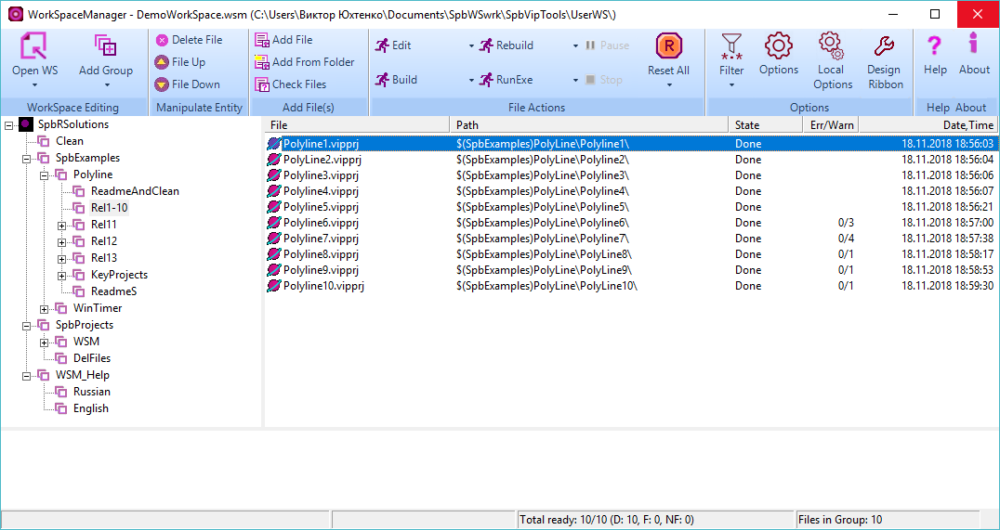
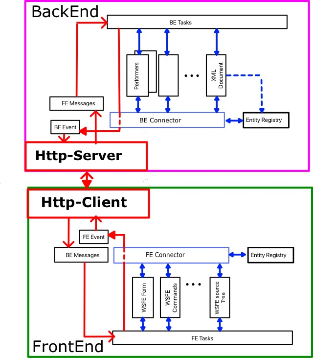
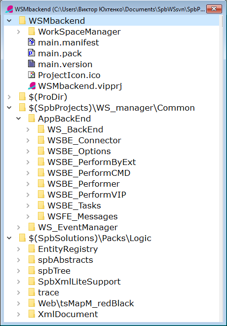

Copyright (c) Prolog Developemnt Center SPb
WorkSpace Manager
Version 2.0
Introduction
Motivation
The
idea of developing the WorkSpaceManager application came about when
trying to use the SolutionManager application, which is part of the
professional version of Visual Prolog from PDC.
The need for its
use was due to the fact that several interdependent projects were at
work at the same time, which had to be jointly compiled, launched for
execution. Especially strained the situation of using the Visual Prolog
system directly "from the pen of" its developers, when it was necessary
to compile all the many projects (there were about 50, including
various small examples and tests)
Not satisfied with a few points:
- work
only with projects of the Visual Prolog system, while it was required
to use different batch files or even different editors;
- it was impossible to change the order of processing projects;
- the impossibility of grouping projects;
- adding
projects from one directory did not allow excluding some of them from
consideration and again changing the order of their processing;
- the inability to use relative addressing of projects in the disk space.
At the same time, we were interested in topics:
- Strict separation of the logical part of the application and its user interface;
- Microservices;
- Using the concept of plug-ins in applications;
- The
ability to create remote services to create and compile Visual Prolog
projects (the idea was once discussed by Leo Schou-Jensen and Thomas
Puls).
Therefore, in the project WorkSpaceManager (WSM),
our needs and our architectural searches came together in relation to
Visual Prolog-based applications.
The project before the first
working version was developed by V. Yukhtenko (Prolog Development
Center SPb), later Boris Belov took part in the work. Andrei Basukinsky
assisted in solving the http interaction tasks.
Functionality
File
The basic unit of processing in WSM is a file whose extension determines its type.
Four
types of operations "Op1", "Op2", "Op3", "Op4" can be performed on a
file of each type. The nature of each of the operations as applied to a
file of a particular type is not fixed and is determined by the user.
In general, each operation looks like a command line on MSWindows
<executable> <prefix> <resource> <suffix>
So for the operation "Build" (Build) of the project file test.vipprj of the Visual Prolog system it looks like this (up to routes):
vipBuilder.exe /build test.vipprj
What causes the construction of the test.vipprj project and the creation of the executable application test.exe in the directory established by the project.
However, for processing any type of file, an application can be selected, by association, installed in the Windows system.
WorkSpace
WorkSpace
(Workspace) contains many files that are relevant to the user. The user
adds and deletes files from the workspace as needed.
WSM allows
you to structure multiple files, grouped by user-defined criteria. The
structure is represented as a tree and is not a file system mapping.
The WorkSpace structure and file processing results are saved in a file with the .wsm extension in XML format.
The general view of the application is shown in the following figure:

File List and Tree
The main working space of the user is the list of files located in the right part of the form.
The
file name, the route to it, the processing status, the number of errors
and warnings during the processing and the time of the last processing
are indicated here.
There are four states of processing result:
- Done - completed successfully
- Failed - failed
- Not Found - File not found
Each
of the files can be performed one of the four described operations
(Op1, Op2, Op3, Op4), valid for files of the appropriate type.
One
of these operations can also be performed on each file of the selected
(marked) list. Operations are performed in order of priority from top
to bottom.
The tree in the left part of the form is a logical
representation of the user about his work space. Initially, the tree
contains only one node - the root, and all resources of the right part
(if any) belong to this node. The user can create an arbitrary tree
structure.
There are two types of tree nodes - group and folder.
A group
can contain subgroups and it can belong to an arbitrary number of
files. The group provides operations for adding, deleting files and
moving them.
The folder
corresponds to the directory of disk space and contains only those
files whose types are defined in WSM, and which are contained in the
directory and its subdirectories.
Folder cannot contain groups. The
user can move files of a folder and (conditionally) delete them.
Deleted files remain visible and change only the display brightness on
the screen. The user can return the file to the active state.
In
the right part of the form, all files of the group selected on the left
are displayed, including all files of all subgroups and folders. This
allows you to perform operations either on all the files in the
workspace, or only on the part currently in focus of the user.
Drag-and-drop
operations can be performed on the file list and on the tree, which
allows you to quickly rearrange priorities and processing strategies.
Moving with the keyboard is also possible.
WSM variables
The
user can use both absolute and relative addressing of files in the disk
space. Relative addressing is similar to that used in the Visual Prolog
system. A named path is defined. The path name is used as a prefix in
the file path. This named route here is called a WSM-variable.
Relative addressing allows you to move the workspace from one computer to another, overriding only the values of WSM-variables.
The
user can define an unlimited number of WSM-variables and edit their
value. The following figure shows the WSM-variable editor.

Language
The user interface language can be localized in relation to user preferences.
The
language setting file LanguageWSM.xml is located (and should always be
located there) in the directory of the executable file.
The base
interface language is English, but most form labels, dialogs, and
messages can be reassigned by editing the LanguageWSM.xml file.
Switching the user interface language is located in the Misc section of the WorkSpace Settings dialog.
Architecture
From
the very beginning of its development, the architecture of the
application was focused on the strict separation of the user interface
from the logical part of the application, based on the subsequent use
of microservice technology.
Therefore, the first implementation of the application immediately provided its separation into FrontEnd and BackEnd.
The structure of the mono application is shown in the following figure.

Here
the blue arrows show the links inside BackEnd and FrontEnd,
respectively, and the red arrows indicate the organization of the
connection between BackEnd and FrontEnd.
Inside these
structures, modules access other modules through the BE (FE)
-Connector, which accesses the object registry (Entity Registry).
Events
initiated by the opposite side are processed by the BE (FE) Messages
module, which invokes the corresponding predicates of the BE (FE) Tasks
module. That, in turn, refers to the other modules BackEnd (FrontEnd).
After receiving data for the opposite side, the BE (FE) Tasks module
sends a message through the BE (FE) Event module. The opposite page
subscribes to data source events for it.
The initiator of the data exchange is always FrontEnd, which initiates the execution of tasks in BackEnd.
Work
happens in asynchronous mode: sending a request, FrontEnd returns to
its work. BackEnd, after receiving the request, performs the task and,
possibly, initiates the transfer of data in FrontEnd. This can be
either a single message or a sequence of messages that must be
processed in FrontEnd.
This structure of the application made it
possible to switch to the option of separate applications (BackEnd and
FrontEnd), which interact via the HTTP protocol, without any serious
consequences, by adding and enabling the Http-Server and Http-Client to
work.
The structure of such an application is shown in the following figure.

Client and Server themselves convert data and organize their transfer between BackEnd and FrontEnd.
Technology
When developing WSM, PDC VIP v.9 technologies were used, proprietary technologies and techniques:
- Registration of objects in shared memory;
- Organization of data storage in XML format;
- Data exchange based on events (Event Messaging) in the format namedValueList;
- Organization of space forms based on the split Screen;
- Organization of management based on the ribbon-panel;
- Client-server architecture;
- Data exchange via http protocol;
- Data exchange in Json format (when working on the http protocol);
- The use of message queues in a multithreaded environment (when working on the HTTP protocol).
Application design structure
The structure of the mono application is shown below.

And here are the project structures for Http-FrontEnd and Http-BackEnd

